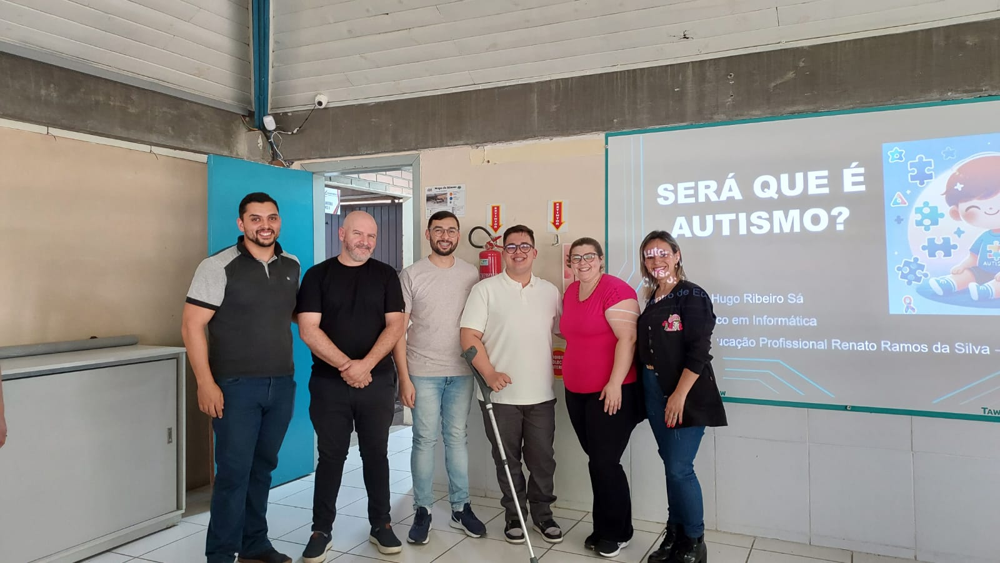
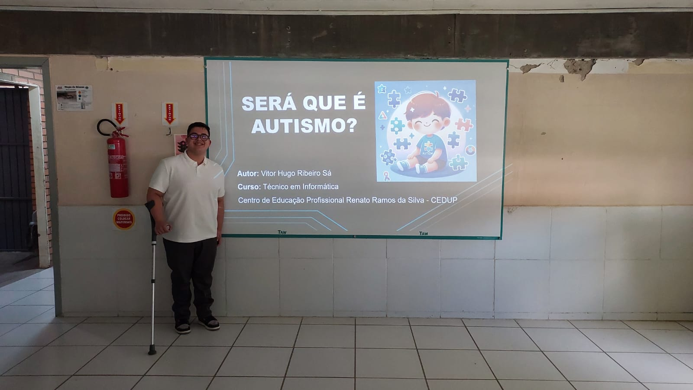

O projeto "Será que é Autismo?" foi desenvolvido por Vítor Hugo Ribeiro Sa, como parte de seu trabalho de conclusão do curso técnico em Informática no CEDUP Renato Ramos da Silva, em Lages, Santa Catarina. O principal objetivo da plataforma é fornecer uma ferramenta gratuita, acessível e de fácil utilização para ajudar pais, responsáveis e profissionais da educação e saúde a identificarem sinais iniciais do Transtorno do Espectro Autista (TEA) em crianças. Através de um questionário baseado no M-CHAT (Modified Checklist for Autism in Toddlers), o site oferece uma triagem simples e prática para detectar características associadas ao autismo. O autismo é uma condição neurológica que afeta milhões de pessoas ao redor do mundo. O diagnóstico precoce é fundamental para garantir que as crianças recebam intervenções e terapias adequadas, que podem fazer uma grande diferença no desenvolvimento delas. No entanto, muitas famílias enfrentam dificuldades para acessar diagnósticos profissionais, especialmente em comunidades de menor renda ou em áreas onde os recursos são limitados. Esse foi o principal motivador para a criação do "Será que é Autismo?": fornecer uma ferramenta inicial de triagem, capaz de orientar as famílias e os profissionais da educação de forma simples, rápida e gratuita. O site oferece um questionário composto por 20 perguntas, adaptadas do M-CHAT, que abordam diversos comportamentos e sinais de desenvolvimento que podem estar associados ao autismo. Ao responder ao questionário, o usuário recebe uma pontuação que indica a probabilidade da criança apresentar características autistas, além de orientações sobre o que fazer a seguir, como procurar um profissional para uma avaliação mais detalhada. Vale destacar que o site não substitui um diagnóstico médico, mas serve como um primeiro passo para aqueles que desejam entender melhor os sinais de autismo. O projeto foi desenvolvido utilizando tecnologias como HTML, CSS, JavaScript e PHP, com o intuito de garantir que fosse acessível e fácil de usar para qualquer pessoa, independentemente do seu nível de conhecimento técnico. A interface do site foi pensada de maneira intuitiva, inspirada em plataformas populares, como o catálogo da Netflix, para que qualquer pessoa, mesmo sem experiência com tecnologia, pudesse navegar com facilidade. O design simples e funcional garante que o foco permaneça no conteúdo, facilitando a compreensão das informações. A criação desse site também reflete a experiência pessoal de Vítor Hugo, que, sendo uma pessoa com deficiência, tem uma visão sensível sobre as dificuldades que muitas famílias enfrentam no processo de diagnóstico e acompanhamento do autismo. O site busca, assim, ser uma ferramenta inclusiva, com a missão de democratizar o acesso à informação e facilitar o encaminhamento para profissionais especializados. Com o tempo, o projeto tem planos de expansão. A ideia é incluir novos recursos e funcionalidades, como informações adicionais sobre tratamentos, terapias e estratégias educacionais, bem como orientações para os profissionais da saúde e da educação. Há também a intenção de traduzir o site para diferentes idiomas, aumentando seu alcance e impacto. O "Será que é Autismo?" não é apenas uma plataforma digital, mas uma iniciativa que visa transformar a maneira como o autismo é percebido e tratado nas comunidades. Através dessa ferramenta, o projeto busca conscientizar e empoderar as famílias, permitindo-lhes tomar decisões informadas sobre o acompanhamento e o cuidado de suas crianças. Ao proporcionar acesso a informações precisas e de fácil entendimento, o site se propõe a ser um aliado no processo de identificação precoce do autismo e a promover uma maior inclusão e acolhimento para as pessoas com TEA.

